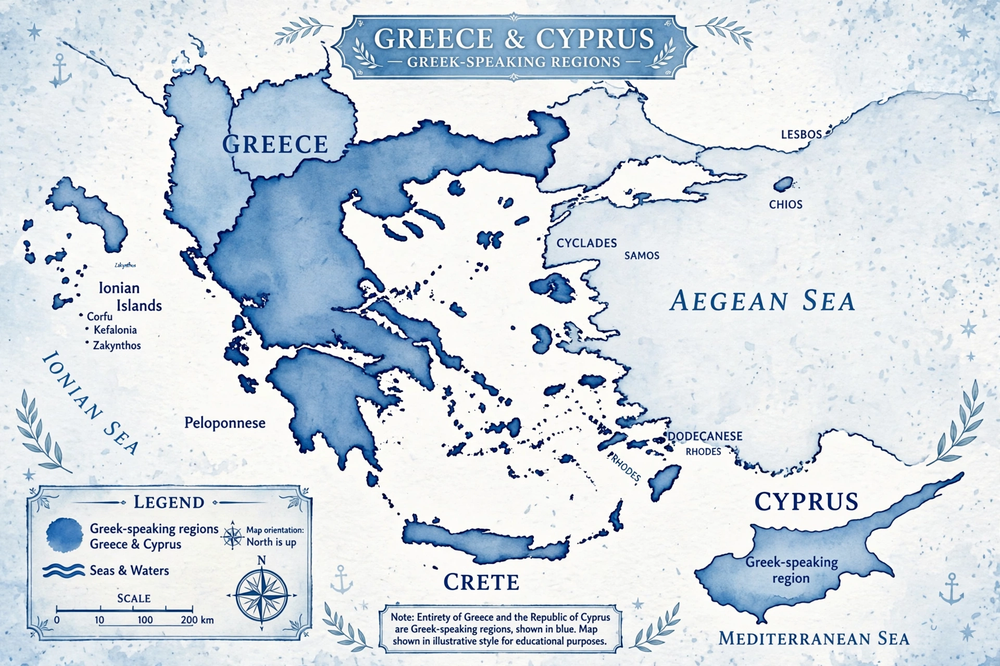

From Wikipedia, the free encyclopedia
| Modern Greek | |
| Νέα Ελληνικά / Ελληνικά | |
| Native to | Greece, Cyprus, Greek diaspora |
|---|---|
| Native speakers | c. 13.5 million (2012) |
| Language family | Indo-European > Hellenic > Greek |
| Early forms | Ancient Greek > Koine Greek > Medieval Greek |
| Dialects | Demotic, Katharevousa (historical), Cypriot, Pontic, Cappadocian, Tsakonian, Griko |
| Writing system | Greek alphabet |
| Official status | Official language of Greece and Cyprus; recognised minority language in parts of Italy, Albania, and elsewhere |
| Language codes | ISO 639-1: el; ISO 639-2: gre/ell; ISO 639-3: ell |

Modern Greek (Νέα Ελληνικά, Néa Elliniká, or simply Ελληνικά, Elliniká) is the modern form of the Greek language, spoken primarily in Greece and Cyprus as well as by Greek diaspora communities worldwide. It is the official language of both Greece and Cyprus and one of the 24 official languages of the European Union. Modern Greek is generally held to begin around 1453, the year of the fall of Constantinople, though linguists treat the transition from Medieval Greek as gradual.
Greek has a documented history of some 3,400 years, the longest of any Indo-European language still spoken. Modern Greek descends from Koine Greek, the common dialect of the Hellenistic world, through Medieval (Byzantine) Greek. During the Ottoman period, the language existed in a state of diglossia: the spoken vernacular, Demotic (Δημοτική), diverged from the archaizing written standard, Katharevousa ("purified" Greek), promoted after independence in the 19th century. The "language question" (γλωσσικό ζήτημα) dominated Greek cultural life for over a century, at times erupting into violence, as in the Gospel riots of 1901. In 1976, Demotic was made the official language of the state, and in 1982 the monotonic system of accentuation replaced the old polytonic system.
Modern Greek has a relatively simple phoneme inventory: five vowels /i, u, e, o, a/ and a consonant system notable for its fricatives. A major historical feature is iotacism: the merger of several ancient vowels and diphthongs into the single sound /i/, so that the letters η, υ, ει, οι, υι are all pronounced the same way. Stress is contrastive and can fall on any of the last three syllables of a word.
Modern Greek retains the inflectional character of Ancient Greek, though simplified. Nouns inflect for three genders (masculine, feminine, neuter), two numbers, and four cases (nominative, genitive, accusative, vocative) — the ancient dative having been lost except in fossilized expressions. The verb system distinguishes active and mediopassive voice, two aspects (imperfective and perfective stems), and builds a periphrastic perfect with the auxiliary έχω ("to have"). Unlike Ancient Greek, Modern Greek has no infinitive; subordinate clauses use the particle να plus a finite verb.
The core vocabulary is inherited from Ancient Greek. Loanwords entered from Latin, Venetian and Italian, French, and Turkish during successive periods of foreign influence; many Turkish loans were purged from the standard language in the 19th and 20th centuries, though they survive in colloquial speech and some dialects. Today English is the largest source of new loans, especially in technology and popular culture.
The standard language is based on the southern dialects, especially that of the Peloponnese and Athens. Distinct varieties include Cypriot Greek, Pontic Greek (spoken around the Black Sea), Cappadocian Greek (heavily influenced by Turkish), Tsakonian (descended from ancient Doric rather than Koine, and now critically endangered), and the Italiot varieties Griko and Grecanico in southern Italy, both recognised under Italian minority-language law.